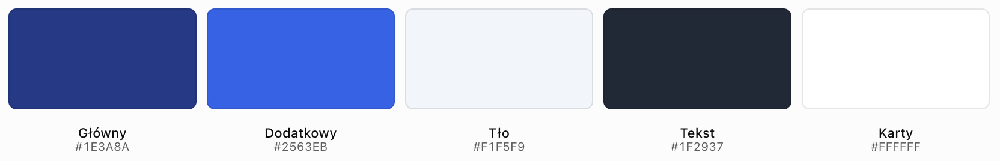

Zasady projektowania witryn – układ strony, kolorystyka, typografia i czytelność
Cel lekcji: poznanie podstawowych zasad projektowania estetycznych, funkcjonalnych i czytelnych stron internetowych oraz zastosowanie tych zasad podczas tworzenia własnej witryny za pomocą HTML5 i CSS3.
Czas realizacji: 2 × 45 minut.
1. Wprowadzenie
Poprawnie napisana strona internetowa nie zawsze jest wygodna i przyjemna w użytkowaniu.
Nawet jeśli wszystkie znaczniki HTML i właściwości CSS działają prawidłowo, strona może być nieczytelna, chaotyczna lub trudna w obsłudze.
Projektowanie witryny polega nie tylko na tworzeniu kodu, ale również na odpowiednim rozmieszczeniu treści, doborze kolorów, czcionek, obrazów i odstępów.
Przykładowe problemy
- Zbyt wiele kolorów na jednej stronie.
- Nieczytelna lub zbyt mała czcionka.
- Brak wyraźnego podziału na sekcje.
- Nieuporządkowane menu nawigacyjne.
- Zbyt małe odstępy między elementami.
- Zbyt długie linie tekstu.
- Nieodpowiedni kontrast tekstu i tła.
- Przypadkowe rozmieszczenie obrazów.
📌 Zapamiętaj
Dobra witryna powinna być jednocześnie estetyczna, czytelna, funkcjonalna i dostępna.
2. Podstawowe cele projektowania witryn
Podczas projektowania strony należy uwzględnić potrzeby jej użytkowników.
Najważniejsze cele
| Cel | Znaczenie |
|---|---|
| Funkcjonalność | Użytkownik może łatwo korzystać ze strony. |
| Czytelność | Tekst jest łatwy do przeczytania. |
| Estetyka | Kolory, czcionki i elementy tworzą uporządkowaną całość. |
| Spójność | Podobne elementy mają podobny wygląd. |
| Responsywność | Strona dostosowuje się do różnych szerokości ekranu. |
| Dostępność | Strona jest możliwa do obsługi przez osoby o różnych potrzebach. |
Przykład
Jeśli projektujemy stronę szkolnego koła informatycznego, użytkownik powinien szybko znaleźć:
- informacje o kole,
- terminy spotkań,
- opis realizowanych projektów,
- dane kontaktowe.
Najważniejsze informacje nie powinny być ukryte w przypadkowych miejscach.
3. Planowanie witryny przed kodowaniem
Przed napisaniem kodu HTML warto przygotować prosty projekt strony.
Taki projekt nazywamy często makietą (wireframe).
Makieta określa
- rozmieszczenie nagłówka,
- położenie menu,
- kolejność sekcji,
- rozmieszczenie tekstów i obrazów,
- miejsce na stopkę.
Przykładowa makieta
+--------------------------------------+
| LOGO |
| NAZWA WITRYNY |
+--------------------------------------+
| START OFERTA O NAS KONTAKT |
+--------------------------------------+
| |
| SEKCJA POWITALNA |
| Nagłówek i krótki opis |
| |
+------------+------------+------------+
| KARTA 1 | KARTA 2 | KARTA 3 |
| Opis | Opis | Opis |
+------------+------------+------------+
| |
| KONTAKT |
| |
+--------------------------------------+
| STOPKA |
+--------------------------------------+Etapy projektowania
- Określ temat i cel strony.
- Ustal grupę odbiorców.
- Wybierz najważniejsze treści.
- Zaplanuj kolejność sekcji.
- Przygotuj makietę.
- Dobierz kolory i czcionki.
- Rozpocznij kodowanie HTML i CSS.
- Sprawdź wygląd oraz działanie strony.
📌 Dobra praktyka
Najpierw zaplanuj strukturę i rozmieszczenie elementów, a dopiero później zajmij się szczegółami dekoracyjnymi.
4. Układ strony internetowej
Układ strony określa sposób rozmieszczenia jej elementów.
Typowe części witryny
| Element | Zastosowanie |
|---|---|
header |
Nagłówek strony lub sekcji. |
nav |
Obszar nawigacji. |
main |
Główna zawartość dokumentu. |
section |
Tematyczna sekcja treści. |
article |
Samodzielna część zawartości. |
aside |
Treść uzupełniająca. |
footer |
Stopka strony lub sekcji. |
Przykład HTML
<header>
<h1>Moja witryna</h1>
</header>
<nav>
<a href="#start">Start</a>
<a href="#oferta">Oferta</a>
<a href="#kontakt">Kontakt</a>
</nav>
<main>
<section id="start">
<h2>Witaj!</h2>
<p>Treść powitalna.</p>
</section>
<section id="oferta">
<h2>Oferta</h2>
<p>Opis oferty.</p>
</section>
<section id="kontakt">
<h2>Kontakt</h2>
<p>Dane kontaktowe.</p>
</section>
</main>
<footer>
<p>Autor strony</p>
</footer>Ograniczenie szerokości treści
.kontener {
width: 90%;
max-width: 1100px;
margin: 0 auto;
}Dzięki temu zawartość nie rozciąga się nadmiernie na dużych ekranach.
5. Hierarchia wizualna
Hierarchia wizualna określa, które elementy przyciągają uwagę użytkownika w pierwszej kolejności.
Najważniejsze informacje powinny być łatwe do zauważenia.
Hierarchię tworzymy przez
- rozmiar tekstu,
- grubość czcionki,
- kolor,
- kontrast,
- odstępy,
- położenie elementów.
Przykład CSS
h1 {
font-size: 40px;
font-weight: bold;
}
h2 {
font-size: 28px;
}
h3 {
font-size: 22px;
}
p {
font-size: 16px;
}Użytkownik powinien łatwo odróżniać tytuł strony od nagłówków sekcji i zwykłych akapitów.
Przykład prawidłowej struktury
<h1>Kurs tworzenia stron WWW</h1>
<h2>Technologie internetowe</h2>
<h3>HTML5</h3>
<p>Opis technologii HTML5.</p>
<h3>CSS3</h3>
<p>Opis technologii CSS3.</p>📌 Zapamiętaj
Nagłówki HTML powinny odzwierciedlać strukturę treści, a nie służyć wyłącznie do powiększania tekstu.
6. Wyrównanie, odstępy i pusta przestrzeń
Odstępy pomagają uporządkować zawartość i oddzielić od siebie poszczególne elementy.
Pusta przestrzeń nie jest błędem. Ułatwia odbiór informacji.
margin i padding
| Właściwość | Znaczenie |
|---|---|
margin |
Odstęp zewnętrzny elementu. |
padding |
Odstęp wewnętrzny elementu. |
Przykład
.karta {
padding: 24px;
margin-bottom: 20px;
background-color: white;
border-radius: 10px;
}Odstępy w Flexbox
.karty {
display: flex;
gap: 20px;
}Wyrównanie elementów
.menu {
display: flex;
justify-content: center;
align-items: center;
}
justify-content
odpowiada za rozmieszczenie
elementów wzdłuż osi głównej.
align-items
odpowiada za wyrównanie
wzdłuż osi poprzecznej.
📌 Dobra praktyka
Stosuj powtarzalne odstępy, np. 8 px, 16 px, 24 px i 32 px, zamiast przypadkowych wartości dla każdego elementu.
7. Kolorystyka witryny internetowej
Kolory wpływają na wygląd strony, rozpoznawalność elementów oraz czytelność treści.
W dobrze zaprojektowanej witrynie kolory powinny tworzyć spójną paletę.
Podstawowe role kolorów
| Rodzaj koloru | Zastosowanie |
|---|---|
| Kolor główny | Nagłówek, menu, najważniejsze elementy. |
| Kolor dodatkowy | Wyróżnienie wybranych sekcji. |
| Kolor akcentowy | Przyciski i ważne działania. |
| Kolor tła | Główna powierzchnia strony. |
| Kolor tekstu | Nagłówki i akapity. |
Przykładowa paleta
| Element | Kolor HEX |
|---|---|
| Kolor główny | #1E3A8A |
| Kolor dodatkowy | #2563EB |
| Kolor tła | #F1F5F9 |
| Kolor tekstu | #1F2937 |
| Kolor kart | #FFFFFF |
Przykład CSS
body {
background-color: #F1F5F9;
color: #1F2937;
}
header {
background-color: #1E3A8A;
color: white;
}
button {
background-color: #2563EB;
color: white;
} Przykład spójnej palety dla witryny edukacyjnej lub firmowej.
Kolory można zmienić, zachowując ich role i odpowiedni kontrast.

8. Dobór palety kolorów
Jednym ze sposobów organizowania kolorystyki jest zasada 60–30–10.
Jest to wskazówka projektowa, a nie obowiązkowa reguła CSS.
Zasada 60–30–10
| Udział | Przeznaczenie |
|---|---|
| 60% | Kolor dominujący, np. jasne tło. |
| 30% | Kolor uzupełniający, np. nagłówek i wybrane sekcje. |
| 10% | Kolor akcentowy, np. przyciski. |
Przykład zastosowania
body {
background-color: #F8FAFC;
}
header,
footer {
background-color: #1E3A8A;
}
.przycisk {
background-color: #EA580C;
color: white;
}W tym przykładzie jasne tło dominuje, granat porządkuje strukturę, a pomarańczowy wyróżnia przyciski.
Zmienne CSS
W większych projektach warto zapisać kolory jako zmienne CSS.
:root {
--kolor-glowny: #1E3A8A;
--kolor-dodatkowy: #2563EB;
--kolor-tla: #F1F5F9;
--kolor-tekstu: #1F2937;
}
body {
background-color: var(--kolor-tla);
color: var(--kolor-tekstu);
}
header {
background-color: var(--kolor-glowny);
}Zmiana wartości zmiennej pozwala szybko zmienić kolor we wszystkich miejscach, które z niej korzystają.
📌 Zapamiętaj
Lepiej zastosować kilka dobrze dobranych kolorów niż wiele przypadkowych barw.
9. Kontrast tekstu i tła
Kontrast określa różnicę jasności pomiędzy elementami.
Odpowiedni kontrast jest szczególnie ważny dla czytelności tekstu.
Przykład słabego kontrastu
.tekst {
color: #CCCCCC;
background-color: #FFFFFF;
}Jasnoszary tekst na białym tle może być trudny do odczytania.
Przykład lepszego kontrastu
.tekst {
color: #1F2937;
background-color: #FFFFFF;
}Wytyczne WCAG
Według kryteriów WCAG na poziomie AA typowy tekst powinien mieć współczynnik kontrastu wynoszący co najmniej 4,5:1.
Dla dużego tekstu minimalny współczynnik wynosi 3:1.
Za duży tekst w tym kontekście uznaje się m.in. tekst o rozmiarze co najmniej 24 px lub pogrubiony o rozmiarze około 18,7 px.
Niektóre elementy mają odrębne wymagania, dlatego warto sprawdzać projekt odpowiednim narzędziem do pomiaru kontrastu.
Jak sprawdzić kontrast?
- Odczytaj kolor tekstu i tła.
- Otwórz narzędzie do sprawdzania kontrastu.
- Wprowadź obie wartości HEX.
- Sprawdź otrzymany współczynnik.
- W razie potrzeby zmień kolory.
Przykładowe narzędzie: WebAIM Contrast Checker .
📌 Zapamiętaj
Kolor tekstu powinien wyraźnie odróżniać się od koloru tła.
Nie oceniaj kontrastu wyłącznie na podstawie własnego wrażenia.
10. Typografia na stronie internetowej
Typografia obejmuje sposób prezentacji tekstu, w tym dobór czcionek, ich rozmiarów, grubości i odstępów.
Najważniejsze właściwości CSS
| Właściwość | Zastosowanie |
|---|---|
font-family |
Rodzina czcionek. |
font-size |
Rozmiar tekstu. |
font-weight |
Grubość czcionki. |
line-height |
Wysokość linii. |
letter-spacing |
Odstępy między znakami. |
text-align |
Wyrównanie tekstu. |
Przykład
body {
font-family: Arial, sans-serif;
font-size: 16px;
line-height: 1.6;
}
h1 {
font-size: 40px;
font-weight: 700;
}
h2 {
font-size: 28px;
font-weight: 600;
}Dobór czcionek
Do tekstu na stronach WWW często stosuje się czytelne kroje bezszeryfowe, np. Arial, Verdana lub systemowe czcionki interfejsu.
Nie oznacza to, że kroje szeryfowe są nieodpowiednie. Ważniejsza jest czytelność i dopasowanie do charakteru witryny.
📌 Dobra praktyka
Na prostej stronie zwykle wystarczy jedna rodzina czcionek z różnymi rozmiarami i grubościami.
11. Czytelność tekstu
Nawet dobrze dobrana czcionka może być trudna do czytania, jeśli akapity są zbyt długie lub mają niewłaściwe odstępy.
Co wpływa na czytelność?
- odpowiedni rozmiar czcionki,
- wysokość linii,
- długość wiersza tekstu,
- kontrast,
- podział treści na akapity,
- czytelne nagłówki,
- odstępy między sekcjami.
Wysokość linii
p {
font-size: 1rem;
line-height: 1.6;
}
Wartość 1.6
oznacza wysokość linii
równą 1,6 rozmiaru czcionki.
Ograniczenie długości wiersza
.tekst {
max-width: 70ch;
}
Jednostka ch
jest związana
z szerokością znaku „0”
używanej czcionki.
70ch
to praktyczne przybliżenie
długości wiersza,
a nie gwarancja dokładnie
70 znaków tekstu.
Wyrównanie akapitów
p {
text-align: left;
}Dla dłuższych tekstów wyrównanie do lewej jest zwykle wygodniejsze niż wyśrodkowanie.
📌 Zapamiętaj
Nie stosuj długich, wyśrodkowanych akapitów tylko dlatego, że taki układ wygląda dekoracyjnie.
Czytelność tekstu jest ważniejsza od efektów wizualnych.
12. Projektowanie czytelnej nawigacji
Menu nawigacyjne powinno umożliwiać szybkie odnalezienie najważniejszych informacji.
Zasady projektowania menu
- Stosuj krótkie i zrozumiałe nazwy.
- Zachowaj jednakowy wygląd odnośników.
- Zapewnij odpowiednie odstępy.
- Wyróżniaj odnośniki po najechaniu kursorem.
- Zapewnij widoczny fokus klawiatury.
- Sprawdź menu na małym ekranie.
HTML
<nav class="menu" aria-label="Menu główne">
<a href="#start">Start</a>
<a href="#oferta">Oferta</a>
<a href="#kontakt">Kontakt</a>
</nav>CSS
.menu {
display: flex;
justify-content: center;
gap: 16px;
padding: 16px;
background-color: #1E3A8A;
}
.menu a {
padding: 10px 16px;
color: white;
text-decoration: none;
border-radius: 6px;
}
.menu a:hover {
background-color: #2563EB;
}
.menu a:focus-visible {
outline: 3px solid #F59E0B;
outline-offset: 3px;
}Menu na telefonie
@media (max-width: 600px) {
.menu {
flex-direction: column;
}
.menu a {
text-align: center;
}
}13. Obrazy i elementy graficzne
Obrazy mogą uatrakcyjniać stronę i ułatwiać zrozumienie treści.
Powinny jednak pasować do tematu witryny i nie utrudniać korzystania z niej.
Zasady stosowania obrazów
- Dobieraj obrazy związane z treścią.
- Unikaj niepotrzebnych dekoracji.
- Zachowuj proporcje obrazów.
- Stosuj odpowiednią jakość i rozmiar plików.
- Dodawaj opisy alternatywne do obrazów informacyjnych.
- Nie umieszczaj ważnego tekstu wyłącznie w obrazie.
HTML
<img src="img/komputer.jpg"
alt="Stanowisko komputerowe z monitorem">CSS
img {
max-width: 100%;
height: auto;
}Obrazy w kartach
.karta img {
width: 100%;
aspect-ratio: 16 / 9;
object-fit: cover;
border-radius: 8px;
}
object-fit: cover
pozwala wypełnić
wyznaczony obszar,
ale może przyciąć
część obrazu.
14. Spójność wizualna witryny
Spójność wizualna oznacza stosowanie powtarzalnych zasad formatowania.
Jeśli wszystkie karty pełnią podobną funkcję, powinny mieć podobny wygląd.
Elementy spójnego projektu
- jednolita paleta kolorów,
- powtarzalne rozmiary nagłówków,
- jednakowe przyciski,
- podobne odstępy,
- jednakowe zaokrąglenia narożników,
- spójny wygląd kart.
Przykład CSS
.karta {
padding: 24px;
background-color: white;
border: 1px solid #CBD5E1;
border-radius: 12px;
}
.przycisk {
display: inline-block;
padding: 12px 20px;
background-color: #2563EB;
color: white;
text-decoration: none;
border-radius: 6px;
}
Zamiast tworzyć
oddzielne style
dla każdego przycisku,
można zastosować
wspólną klasę
przycisk.
Zmienne CSS dla spójności
:root {
--kolor-glowny: #1E3A8A;
--kolor-akcent: #2563EB;
--odstep: 20px;
--zaokraglenie: 10px;
}
.karta {
padding: var(--odstep);
border-radius: var(--zaokraglenie);
}📌 Zapamiętaj
Spójność wizualna ułatwia użytkownikowi rozpoznawanie elementów i sprawia, że witryna wygląda bardziej profesjonalnie.
15. Responsywność jako element dobrego projektu
Projekt strony powinien uwzględniać różne szerokości viewport.
Na małym ekranie należy zadbać o odpowiednie rozmieszczenie elementów i czytelność treści.
Przykład responsywnych kart
.karty {
display: flex;
flex-wrap: wrap;
gap: 20px;
}
.karta {
flex: 1 1 250px;
min-width: 0;
}Karty mogą przechodzić do kolejnego wiersza, gdy zabraknie miejsca.
Przykład media queries
@media (max-width: 600px) {
.karty {
flex-direction: column;
}
.menu {
flex-direction: column;
}
}Responsywna typografia
h1 {
font-size: clamp(26px, 4vw, 46px);
}
Dzięki funkcji
clamp()
rozmiar nagłówka
dostosowuje się
do szerokości viewport
w ustalonych granicach.
16. Podstawy dostępności witryny
Dostępność cyfrowa oznacza projektowanie stron możliwych do użytkowania przez osoby o różnych potrzebach i możliwościach.
Podstawowe zasady
- Stosuj czytelne kolory i odpowiedni kontrast.
- Zachowuj logiczną strukturę nagłówków.
- Dodawaj opisy alternatywne do obrazów informacyjnych.
- Zapewnij możliwość obsługi strony klawiaturą.
- Stosuj zrozumiałe nazwy odnośników.
- Nie przekazuj informacji wyłącznie za pomocą koloru.
- Nie utrudniaj powiększania tekstu.
Widoczny fokus
a:focus-visible,
button:focus-visible {
outline: 3px solid #F59E0B;
outline-offset: 3px;
}Dzięki temu użytkownik korzystający z klawiatury może łatwiej rozpoznać, który element jest aktualnie aktywny.
Opis alternatywny obrazu
<img src="img/biblioteka.jpg"
alt="Regały z książkami w bibliotece">
Jeśli obraz jest wyłącznie
dekoracyjny, można użyć
pustego atrybutu
alt="".
Poprawne nazwy odnośników
Zamiast ogólnego „Kliknij tutaj” lepiej zastosować nazwę informującą o celu odnośnika.
<a href="oferta.html">
Zobacz naszą ofertę
</a>📌 Zapamiętaj
Dostępność nie jest wyłącznie dodatkiem do gotowej strony. Warto uwzględniać ją już na etapie projektowania.
17. Najczęstsze błędy projektowe
Błąd 1 – zbyt wiele kolorów
Przypadkowe kolory mogą powodować wrażenie chaosu.
Rozwiązanie: przygotuj spójną paletę i stosuj ją konsekwentnie.
Błąd 2 – zbyt mały tekst
p {
font-size: 10px;
}Tak mały tekst może być trudny do czytania.
Przykładowe rozwiązanie:
p {
font-size: 1rem;
line-height: 1.6;
}Błąd 3 – brak odstępów
Elementy umieszczone zbyt blisko siebie utrudniają odczytywanie treści.
section {
margin-bottom: 32px;
}
.karta {
padding: 24px;
}Błąd 4 – słaby kontrast
Jasny tekst na jasnym tle może być nieczytelny.
Rozwiązanie: sprawdzaj współczynnik kontrastu kolorów.
Błąd 5 – zbyt długie linie tekstu
Długie wiersze utrudniają śledzenie tekstu.
.tekst {
max-width: 70ch;
}Błąd 6 – nieuporządkowane menu
Odnośniki o przypadkowych nazwach i rozmiarach utrudniają nawigację.
Rozwiązanie: stosuj jednolite style i logiczne nazwy.
Błąd 7 – brak responsywności
Strona może wyglądać poprawnie na komputerze, ale nie mieścić się na telefonie.
Rozwiązanie: stosuj elastyczne rozmiary i media queries.
Błąd 8 – brak spójności
Jeśli każda karta i każdy przycisk wyglądają inaczej, użytkownikowi trudniej zrozumieć strukturę strony.
Rozwiązanie: stosuj wspólne klasy CSS.
18. Kompletny przykład – witryna „Studio Kreatywne”
Poniższy przykład przedstawia prostą witrynę, w której zastosowano:
- uporządkowany układ,
- spójną kolorystykę,
- czytelną typografię,
- odpowiednie odstępy,
- wyraźne przyciski,
- responsywne karty i menu.
Struktura projektu
studio-kreatywne/
|
|-- index.html
|
|-- style.cssPlik index.html
<!DOCTYPE html>
<html lang="pl">
<head>
<meta charset="UTF-8">
<meta name="viewport"
content="width=device-width, initial-scale=1.0">
<title>Studio Kreatywne</title>
<link rel="stylesheet" href="style.css">
</head>
<body>
<header id="start">
<div class="kontener">
<h1>Studio Kreatywne</h1>
<p>
Projektujemy nowoczesne
i czytelne strony internetowe.
</p>
</div>
</header>
<nav class="menu" aria-label="Menu główne">
<a href="#start">Start</a>
<a href="#oferta">Oferta</a>
<a href="#o-nas">O nas</a>
<a href="#kontakt">Kontakt</a>
</nav>
<main class="kontener">
<section class="powitanie" id="o-nas">
<h2>Dobrze zaprojektowana witryna</h2>
<p>
Tworzymy strony,
które łączą estetykę,
czytelność i funkcjonalność.
</p>
<a class="przycisk" href="#oferta">
Poznaj naszą ofertę
</a>
</section>
<section id="oferta">
<h2>Nasza oferta</h2>
<div class="karty">
<article class="karta">
<h3>Projektowanie WWW</h3>
<p>
Przygotowujemy przejrzyste
projekty stron internetowych.
</p>
</article>
<article class="karta">
<h3>Grafika komputerowa</h3>
<p>
Tworzymy elementy graficzne
dopasowane do charakteru witryny.
</p>
</article>
<article class="karta">
<h3>Responsywne układy</h3>
<p>
Dostosowujemy wygląd stron
do różnych szerokości ekranów.
</p>
</article>
</div>
</section>
<section class="kontakt" id="kontakt">
<h2>Kontakt</h2>
<p>
Masz pytania?
Napisz do nas.
</p>
<a href="mailto:kontakt@example.com">
kontakt@example.com
</a>
</section>
</main>
<footer>
<p>
© 2026 Studio Kreatywne
</p>
</footer>
</body>
</html>Plik style.css
/* Zmienne kolorów */
:root {
--kolor-glowny: #1E3A8A;
--kolor-akcent: #2563EB;
--kolor-tla: #F1F5F9;
--kolor-tekstu: #1F2937;
--kolor-karty: #FFFFFF;
}
/* Model pudełkowy */
*,
*::before,
*::after {
box-sizing: border-box;
}
/* Ustawienia ogólne */
body {
margin: 0;
font-family: Arial, sans-serif;
font-size: 16px;
line-height: 1.6;
color: var(--kolor-tekstu);
background-color: var(--kolor-tla);
}
/* Kontener */
.kontener {
width: 90%;
max-width: 1100px;
margin: 0 auto;
}
/* Nagłówek */
header {
padding: 60px 20px;
text-align: center;
background-color: var(--kolor-glowny);
color: white;
}
header h1 {
margin: 0;
font-size: clamp(28px, 4vw, 46px);
}
header p {
max-width: 65ch;
margin: 15px auto 0;
}
/* Nawigacja */
.menu {
display: flex;
justify-content: center;
gap: 16px;
padding: 15px;
background-color: var(--kolor-akcent);
}
.menu a {
padding: 10px 16px;
color: white;
text-decoration: none;
border-radius: 6px;
}
.menu a:hover {
background-color: var(--kolor-glowny);
}
.menu a:focus-visible {
outline: 3px solid #F59E0B;
outline-offset: 3px;
}
/* Sekcje */
section {
margin: 35px 0;
}
section h2 {
margin-top: 0;
font-size: clamp(24px, 3vw, 32px);
color: var(--kolor-glowny);
}
/* Sekcja powitalna */
.powitanie {
padding: 40px;
background-color: white;
border-radius: 12px;
}
.powitanie p {
max-width: 70ch;
}
/* Przycisk */
.przycisk {
display: inline-block;
margin-top: 15px;
padding: 12px 20px;
color: white;
background-color: var(--kolor-akcent);
text-decoration: none;
border-radius: 6px;
}
.przycisk:hover {
background-color: var(--kolor-glowny);
}
.przycisk:focus-visible {
outline: 3px solid #F59E0B;
outline-offset: 3px;
}
/* Karty */
.karty {
display: flex;
flex-wrap: wrap;
gap: 20px;
}
.karta {
flex: 1 1 250px;
min-width: 0;
padding: 25px;
background-color: var(--kolor-karty);
border: 1px solid #CBD5E1;
border-radius: 12px;
box-shadow:
0 4px 12px rgba(0, 0, 0, 0.08);
}
.karta h3 {
margin-top: 0;
color: var(--kolor-akcent);
}
/* Kontakt */
.kontakt {
padding: 30px;
background-color: #DBEAFE;
border-radius: 12px;
}
/* Stopka */
footer {
padding: 25px;
text-align: center;
color: white;
background-color: var(--kolor-glowny);
}
/* Małe ekrany */
@media (max-width: 600px) {
header {
padding: 35px 15px;
}
.menu {
flex-direction: column;
gap: 5px;
}
.menu a {
text-align: center;
}
.powitanie {
padding: 20px;
}
.karty {
flex-direction: column;
}
.kontakt {
padding: 20px;
}
}Co zostało zastosowane?
| Zasada projektowa | Realizacja |
|---|---|
| Układ | Semantyczne sekcje i kontener o ograniczonej szerokości. |
| Kolorystyka | Spójna paleta kolorów zdefiniowana przez zmienne CSS. |
| Typografia | Jednolita rodzina czcionek i wyraźne nagłówki. |
| Czytelność | Odpowiednie odstępy, wysokość linii i ograniczona długość tekstu. |
| Nawigacja | Menu z czytelnymi odnośnikami i widocznym fokusem. |
| Responsywność | Elastyczne karty i pionowe menu na małych ekranach. |
📌 Zapamiętaj
- Dobra witryna powinna być estetyczna, czytelna i funkcjonalna.
- Projektowanie strony warto rozpocząć od określenia celu i odbiorców.
- Makieta przedstawia plan rozmieszczenia elementów strony.
- Układ powinien ułatwiać odnalezienie najważniejszych informacji.
- Elementy semantyczne HTML pomagają organizować treść.
- Hierarchia wizualna wyróżnia najważniejsze informacje.
- Nagłówki powinny tworzyć logiczną strukturę.
- Odstępy poprawiają czytelność i porządkują układ.
marginodpowiada za odstępy zewnętrzne.paddingodpowiada za odstępy wewnętrzne.- Kolorystyka witryny powinna być spójna.
- Kolor główny, dodatkowy i akcentowy mogą pełnić różne funkcje.
- Zasada 60–30–10 jest wskazówką przy doborze kolorów.
- Zmienne CSS ułatwiają zarządzanie kolorami.
- Kontrast tekstu i tła wpływa na czytelność.
- Typowy tekst powinien osiągać kontrast co najmniej 4,5:1 zgodnie z WCAG AA.
- Typografia obejmuje dobór czcionek, rozmiarów i odstępów.
line-heightokreśla wysokość linii tekstu.max-widthpozwala ograniczyć szerokość tekstu i kontenerów.- Długie akapity zwykle lepiej wyrównywać do lewej.
- Menu powinno być proste i zrozumiałe.
- Obrazy powinny pasować do treści i zachowywać proporcje.
- Podobne elementy powinny mieć podobny wygląd.
- Responsywność jest częścią dobrego projektu.
- Dostępność należy uwzględniać od początku projektowania.
- Stronę należy sprawdzić na różnych szerokościach ekranu.
📝 Zadania praktyczne
Temat projektu: „Moja profesjonalna wizytówka WWW”.
Cel: wykonanie estetycznej, czytelnej i responsywnej strony internetowej zgodnie z podstawowymi zasadami projektowania witryn.
Utwórz folder PSI_35,
a w nim pliki
index.html
i style.css.
Wszystkie zadania wykonuj w ramach jednego projektu. Każde kolejne zadanie rozbudowuje tę samą stronę.
Zadanie 1 – Zaplanowanie wyglądu witryny
- Wybierz temat strony wizytówkowej, np. fotografia, grafika, informatyka, sport lub inna pasja.
- Określ, do kogo skierowana jest witryna.
- Zaplanuj nagłówek, menu, sekcję powitalną, ofertę i kontakt.
- Przygotuj prostą makietę układu strony na kartce lub w programie graficznym.
- Wybierz kolor główny, dodatkowy, akcentowy i kolor tła.
- Zapisz wartości wybranych kolorów w formacie HEX.
- Wybierz jedną czytelną rodzinę czcionek.
Efekt: gotowy pomysł na wygląd i strukturę strony.
Zadanie 2 – Struktura HTML
- Utwórz poprawny dokument HTML5.
- Dodaj kodowanie UTF-8 i meta viewport.
- Podłącz zewnętrzny plik
style.css. - Dodaj nagłówek z nazwą witryny i krótkim opisem.
- Dodaj menu z odnośnikami: Start, Oferta, O mnie, Kontakt.
- Dodaj główny element
main. - Utwórz sekcję powitalną.
- Dodaj sekcję z trzema kartami opisującymi ofertę lub zainteresowania.
- Dodaj sekcję „O mnie”.
- Dodaj sekcję kontaktową.
- Dodaj stopkę z imieniem i nazwiskiem autora.
Zadanie 3 – Układ i odstępy
- Ustaw dla
bodymargines 0. - Zastosuj
box-sizing: border-box. - Utwórz klasę
kontener. - Ustaw szerokość kontenera na 90%.
- Ustaw maksymalną szerokość na 1100 px.
- Wyśrodkuj kontener za pomocą
margin: 0 auto. - Ustaw odpowiednie odstępy między sekcjami.
- Dodaj padding w sekcji powitalnej.
- Rozmieść trzy karty za pomocą Flexbox.
- Ustaw odstęp między kartami za pomocą
gap.
Zadanie 4 – Kolorystyka i spójność wizualna
- W pliku CSS zdefiniuj co najmniej cztery zmienne kolorów w
:root. - Ustaw kolor tła strony.
- Ustaw kolor nagłówka i stopki.
- Wybierz kolor tekstu zapewniający czytelność.
- Ustaw jednakowy wygląd wszystkich kart.
- Dodaj obramowanie i zaokrąglenie narożników kart.
- Utwórz wspólną klasę
przycisk. - Dodaj zmianę wyglądu przycisku po najechaniu kursorem.
- Sprawdź kontrast tekstu i tła w narzędziu do pomiaru kontrastu.
Zadanie 5 – Typografia i czytelność
- Ustaw jedną rodzinę czcionek dla całej strony.
- Ustaw podstawowy rozmiar tekstu na 16 px lub 1rem.
- Ustaw
line-height: 1.6dla tekstu. - Wyróżnij główny nagłówek.
- Ustaw odpowiednie rozmiary nagłówków
h2ih3. - Ustaw rozmiar głównego nagłówka za pomocą
clamp(). - Ogranicz szerokość przynajmniej jednego dłuższego akapitu za pomocą
max-width. - Zachowaj czytelne odstępy między akapitami.
- Sprawdź, czy najważniejsze informacje są łatwe do zauważenia.
Zadanie 6 – Responsywność i ocena projektu
- Dodaj regułę
@media (max-width: 600px). - Na małym ekranie zmień menu na pionowe.
- Ustaw karty jedna pod drugą.
- Zmniejsz odstępy w sekcji powitalnej.
- Dodaj widoczny fokus dla odnośników.
- Sprawdź działanie wszystkich odnośników menu.
- Przetestuj stronę przy szerokości 360 px.
- Przetestuj stronę przy szerokości 768 px.
- Przetestuj stronę przy szerokości 1440 px.
- Popraw zauważone błędy w układzie, kolorystyce i czytelności.
📁 Wymagana struktura projektu
PSI_35/
|
|-- index.html
|
|-- style.css
Jeśli wykorzystasz
własne obrazy,
umieść je w dodatkowym
folderze img.
📤 Oddanie pracy
Spakuj cały folder
PSI_35
do archiwum ZIP
i prześlij na odpowiednie
Zadanie w Teams.
Przed oddaniem sprawdź: poprawność struktury HTML, działanie odnośników, spójność kolorystyki, czytelność tekstu oraz responsywność strony.
Wszystkie teksty, tytuły i opisy powinny być własne, a nie skopiowane z przykładu.